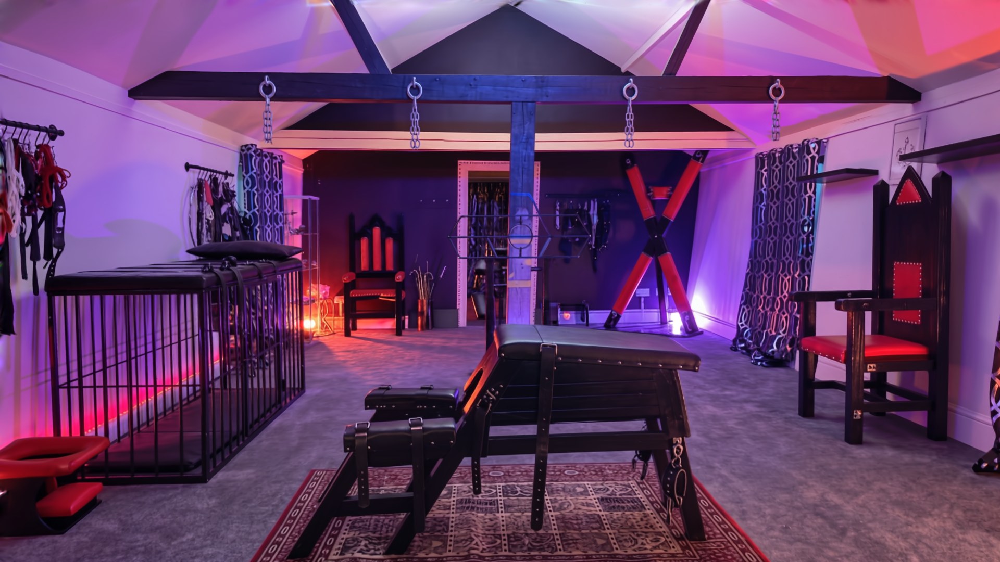

Open in Meta Quest Browser. Load the room, face forward, then enter VR. This capture covers the view in front of you, not the whole room.
In VR: left stick slides along the capture; right stick up/down adjusts height slightly. A or X resets. Start with small head movements. Scale is approximate.
Proportion test · v2. Width and depth leave height unchanged. Set before entering VR; compare one adjustment at a time.